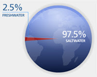
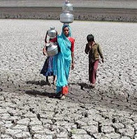
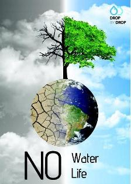
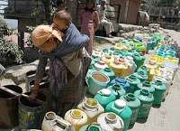
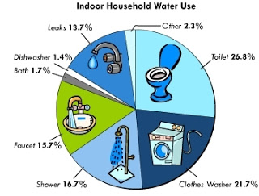

The Blue Mission
 Water covers 71% of the Earth's surface, and is vital for all known forms of life. On Earth, it is found mostly in oceans and other large water bodies, with 1.6% of water below ground in aquifers and 0.001% in the air as vapor, clouds (formed of solid and liquid water particles suspended in air), and precipitation. Oceans hold 97% of surface water, glaciers and polar ice caps 2.4%, and other land surface water such as rivers, lakes and ponds 0.6%. A very small amount of the Earth's water is contained within biological bodies and manufactured products.
 Simply put, water scarcity is either the lack of enough water (quantity) or lack of access to safe water (quality). It's hard for most of us to imagine that clean, safe water is not something that can be taken for granted. But, in the developing world, finding a reliable source of safe water is often time consuming and expensive. This is known as economic scarcity. Water can be found...it simply requires more resources to do it. In other areas, the lack of water is a more profound problem. There simply isn't enough. That is known as physical scarcity. The problem of water scarcity is a growing one. As more people put ever increasing demands on limited supplies, the cost and effort to build or even maintain access to water will increase. And water's importance to political and social stability will only grow with the crisis.

Water is an interesting issue. As with all of Nature it is a symbiotic factor in a greater whole, and an element all life depends on. As we degrade our soils, poison our land and remove the natural catchments for runoff through deforestation and removal of trees; as we fill in our waterways and natural filtering systems in the name of development and progress; as we dam up rivers destroying natural eco-systems, we completely upset the natural scheme of things that water needs to flow and filter clean water for us all.
We will kill each over water. In our slumber we have assumed water will always be there for us – Clean water to drink, waterways for recreation, healthy rivers and oceans to supply us with healthy fish, water to wash our cars, water to green our lawns and landscapes, water to bath and shower in, water to brush our teeth with, water for our swimming pools.
We can conserve, and consciousness is growing, but what about the new billions of people coming into the planet over the next few decades. As water levels go down, the pollutants in it get stronger. All of life is interdependent and all of life needs water or....?

Three things no one can’t live without are Oxygen, Water and Food. No one can live without Water. But do you know how precious is water and how much pure water we have in world.
If 10 years ago someone had given suggestion to sell the pure water, I’m sure people made good joke or laughed a lot on him. But nowadays mineral or purified water is billion dollar industry. People are ready to spend 20 rupees for water bottle, because we know it’s not easy to get pure or clean water.
One thing is sure; in future we are going to get shortage of clean water. In India you can see water shortage in every state, whether it’s capital of India, Delhi or a village of Bihar. People can’t get clean water easily.
Here are some water facts to remember:
Less than 1% of the earth’s water is suitable for drinking
More than a billion people around the globe survive on just over 1 gallon (4 liters) of water per day
Potentially more than 3 billion people may suffer from water shortages by the year 2025
66% of the human body is water
A person can only live without water for approximately one week

Some of Facts about, How valuable clean Water are:
· More than 4 million people died due to water related diseases.
· 98% of water realted diseases occured in developing countries.
· It takes about 300 litres of water to make the paper for just one Sunday newspaper. So use paper as less as you can, use E-mail and electronic sources more.
· On average, women in Africa and Asia have to walk 3.7 miles to collect water. It can be more in rural villages of India.
· In India alone, water born diseases cost the economy 73 million working days per year.
· Global sales of bottled water account for over $60-$80 billion each year.
· A child dies of water born diseases about every 15 Seconds.